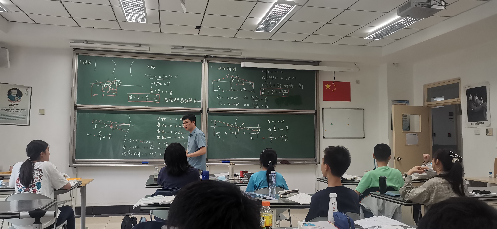

<section class="page">
  <div class="container mx-auto max-w-3xl px-4 text-left">
    <h1 class="text-4xl mb-4 font-bold">物竞往事</h1>
    <p class="text-lg text-gray-500 mb-12">杨麓珈 | 2025年盛夏</p>
    <div class="text-lg space-y-6">
      <figure class="article-image">
        
        <figcaption>这是图片的说明文字（如果不需要可以删除这行）</figcaption>
      </figure>
      <p>
        这是文章的第二段。段落与段落之间会自动产生舒适的间距，这得益于class 中的 "space-y-6"。
      </p>
    </div>
    <div class="text-center mt-20">
      <a onclick="loadPage('memories')" class="highlight cursor-pointer text-xl p-3 rounded-md hover:underline">
        &larr; 返回回忆列表
      </a>
    </div>
  </div>
</section>